Chapter 5 Introduction to ggplot2
Pretty much any statistical plot can be thought of as a mapping between data and one or more visual representations. For example, in a scatter plot we map two ordered sets of numbers (the variables of interest) to points in the Cartesian plane (x,y-coordinates). The representation of data as points in a plane can be thought of as a type of geometric mapping. In a histogram, we divide the range of a variable of interest into bins, count the number of observations in each bin, and represent those counts as bars. The process of counting the data in bins is a type of statistical transformation (summing in this case), while the representation of the counts as bars is another example of a geometric mapping. Both types of plots can be further embellished with additional information, such as coloring the points or bars based on a categorical variable of interest, changing the shape of points, etc. These are examples of aesthetic mappings. An additional operation that is frequently useful is faceting (also called conditioning), in which a series of subplots are created to show particular subsets of the data.
The package ggplot2 is based on a formalized approach for building statistical graphics as a combination of geometric mappings, aesthetic mappings, statistical transformations, and faceting (conditioning). In ggplot2, complex figures are built up by combining layers – where each layer includes a geometric mapping, an aesthetic mapping, and a statistical transformation – along with any desired faceting information.
Many of the key ideas behind ggplot2 (and its predecessor,“ggplot”) are based on a book called “The Grammar of Graphics” (Leland Wilkinson, 1985). The “grammar of graphics” is the “gg” in the ggplot2 name.
5.1 Loading ggplot2
ggplot2 is one of the packages included in the tidyverse meta-package we installed during the previous class session (see the previous lecture notes for instruction if you have not installed tidyverse). If we load the tidyverse package, ggplot2 is automatically loaded as well.
library(tidyverse)However if we wanted to we could load only ggplot2 as follows:
library(ggplot2) # not necessary if we already loaded tidyverse5.2 Example data set: Anderson’s Iris Data
To illustrate ggplot2 we’ll use a dataset called iris. This data set was made famous by the statistician and geneticist R. A. Fisher who used it to illustrate many of the fundamental statistical methods he developed (Recall that Fisher was one of the key contributors to the modern synthesis in biology, reconciling evolution and genetics in the early 20th century). The data set consists of four morphometric measurements for specimens from three different iris species (Iris setosa, I. versicolor, and I. virginica). Use the R help to read about the iris data set (?iris). We’ll be using this data set repeatedly in future weeks so familiarize yourself with it.
The iris data is included in a standard R package (datasets) that is made available automatically when you start up R. As a consequence we don’t need to explicitly load the iris data from a file. Let’s take a few minutes to explore this iris data set before we start generating plots:
names(iris) # get the variable names in the dataset
## [1] "Sepal.Length" "Sepal.Width" "Petal.Length" "Petal.Width"
## [5] "Species"
dim(iris) # dimensions given as rows, columns
## [1] 150 5
head(iris) # can you figure out what the head function does?
## # A tibble: 6 x 5
## Sepal.Length Sepal.Width Petal.Length Petal.Width Species
## <dbl> <dbl> <dbl> <dbl> <fct>
## 1 5.100 3.5 1.4 0.2 setosa
## 2 4.9 3 1.4 0.2 setosa
## 3 4.7 3.2 1.3 0.2 setosa
## 4 4.600 3.1 1.5 0.2 setosa
## 5 5 3.6 1.4 0.2 setosa
## 6 5.4 3.9 1.7 0.4 setosa
tail(iris) # what about the tail function?
## # A tibble: 6 x 5
## Sepal.Length Sepal.Width Petal.Length Petal.Width Species
## <dbl> <dbl> <dbl> <dbl> <fct>
## 1 6.7 3.3 5.7 2.5 virginica
## 2 6.7 3 5.2 2.300 virginica
## 3 6.3 2.5 5 1.9 virginica
## 4 6.5 3 5.2 2 virginica
## 5 6.2 3.4 5.4 2.300 virginica
## 6 5.9 3 5.100 1.8 virginica5.3 Template for single layer plots in ggplot2
A basic template for building a single layer plot using ggplot2 is shown below. When creating a plot, you need to replace the text in brackets (e.g. <DATA>) with appropriate objects, functions, or arguments:
# NOTE: this is pseudo-code. It will not run!
ggplot(data = <DATA>) +
<GEOM_FUNCTION>(mapping = aes(<MAPPINGS>))The base function ggplot() is responsible for creating the coordinate system in which the plot will be display. To this coordinate system we add a geometric mapping (called a “geom” for short) that specifies how data gets mapped into the coordinate system (e.g. points, bars, etc). Included as an input to the geom function is the aesthetic mapping function that specifies which variables to use in the geometric mapping (e.g. which variables to treat as the x- and y-coordinates), colors, etc.
For example, using this template we can create a scatter plot that show the relationship between the variables Sepal.Width and Petal.Width. To do so we subsitute iris for <DATA>, geom_point for <GEOM_FUNCTION>, and x = Sepal.Width and y = Petal.Width for <MAPPINGS>.
ggplot(data = iris) +
geom_point(mapping = aes(x = Sepal.Width, y = Petal.Width))
If we were to translate this code block to English, we might write it as “Using the iris data frame as the source of data, create a point plot using each observeration’s Sepal.Width variable for the x-coordinate and the Petal.Width variable for the y-coordinate.”
5.4 An aside about function arguments
The inputs to a function are also known as “arguments”. In R, when you call a function you can specify the arguments by keyword (i.e. using names specified in the function definition) or by position (i.e. the order of the inputs).
In our bar plot above, we’re using using keyword arguments. For example, in the line ggplot(data = iris), iris is treated as the “data” argument. Similarly, in the second line, aes(x = Sepal.Width, y = Petal.Width) is the “mapping” argument to geom_bar. Note that aes is itself a function (see ?aes) that takes arguments that can be specified positionally or with keywords.
If we wanted to, we could instead use position arguments when calling a function, by passing inputs to the function corresponding to the order they are specified in the function definition. For example, take a minute to read the documentation for the ggplot function (?ggplot). Near the top of the help page you’ll see a description of how the function is called under “Usage”. Reading the Usage section you’ll see that the the “data” argument is the first positional argument to ggplot. Similarly, if you read the docs for the geom_point function you’ll see that mapping is the first positional argument for that function.
The equivalent of our previous example, but now using positional arguments is:
ggplot(iris) + # note we dropped the "data = " part
# note we dropped the "mapping = " part from the geom_point call
geom_point(aes(x = Sepal.Width, y = Petal.Width))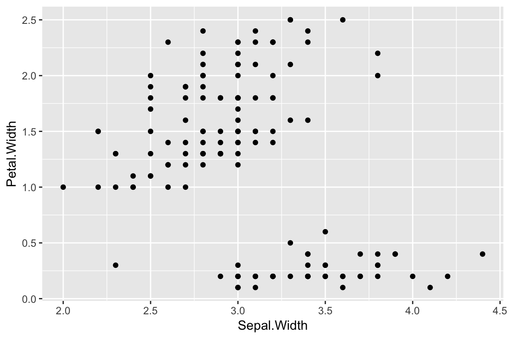
The upside of using positional arguments is that it means less typing, which is useful when working interactively at the console (or in an R Notebok). The downside to using positional arguments is you need to remember or lookup the order of the arguments. Using positional arguments can also make your code less “self documenting” in the sense that it is less explicit about how the inputs are being treated. While the argument “x” is the first argument to the aes function, I chose to explicitly include the argument name to make it clear what variable I’m plotting on the x-axis.
We will cover function arguments in greater detail a class session or two from now, when we learn how to write our own functions.
5.5 Strip plots
One of the simplest visualizations of a continuous variable is to draw points along a number line, where each point represent the value of one of the observations. This is sometimes called a “strip plot”.
First, we’ll use the geom_point function as shown below to generate a strip plot for the Sepal.Width variable in the iris data set.
ggplot(data = iris) +
geom_point(aes(x = Sepal.Width, y = 0))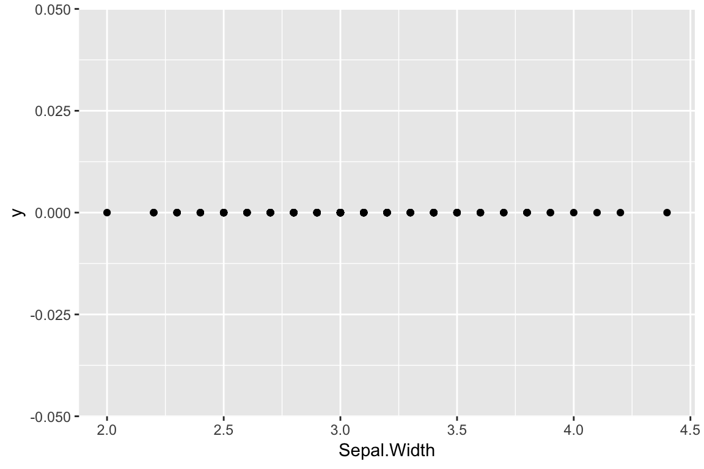
5.5.1 Jittering data
There should have been 150 points plotted in the figure above (one for each of the iris plants in the data set), but visually it looks like only about 25 or 30 points are shown. What’s going on? If you examine the iris data, you’ll see that the all the measures are rounded to the nearest tenth of a centimer, so that there are a large number of observations with identical values of Sepal.Width. This is a limitation of the precision of measurements that was used when generating the data set.
To provide a visual clue that there are multiple observations that share the same value, we can slightly “jitter” the values (randomly move points a small amount in either in the vertical or horizontal direction). Jittering is used solely to enhance visualization, and any statistical analyses you carry out would be based on the original data. When presenting your data to someone else, should note when you’ve used jittering so as not to misconvey the actual data.
Jittering can be accomplished using geom_jitter, which is derived from geom_point:
ggplot(data = iris) +
geom_jitter(aes(x = Sepal.Width, y = 0),
width = 0.05, height = 0, alpha = 0.25)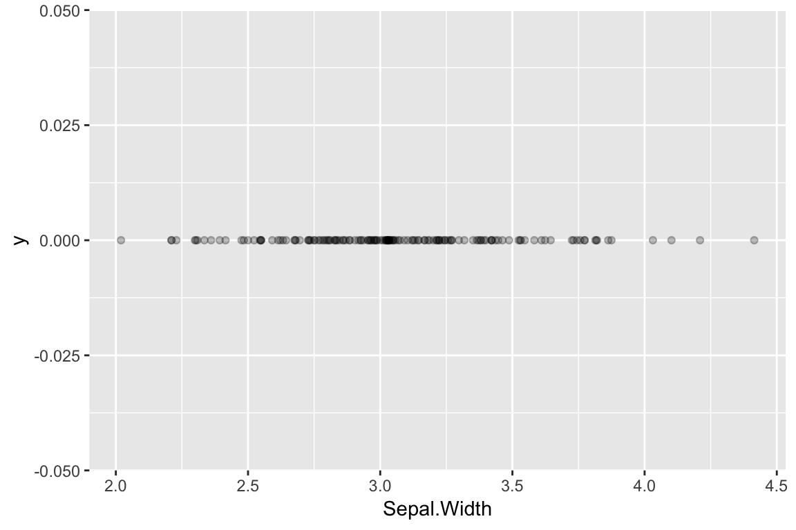
The width and height arguments specify the maximum amount (as fractions of the data) to jitter the observed data points in the horizontal (width) and vertical (height) directions. Here we only jitter the data in the horizontal direction. The alpha argument controls the transparency of the points – the valid range of alpha values is 0 to 1, where 0 means completely transparent and 1 is completely opaque.
Within a geom, arguments outside of the aes mapping apply uniformly across the visualization (i.e. they are fixed values). For example, setting `alpha = 0.25’ made all the points transparent.
5.5.2 Adding categorical information
Recall that are three different species represented in the data: Iris setosa, I. versicolor, and I. virginica. Let’s see how to generate a strip plot that also includes a breakdown by species.
ggplot(data = iris) +
geom_jitter(aes(x = Sepal.Width, y = Species),
width=0.05, height=0.1, alpha=0.5)That was easy! All we had to do was change the aesthetic mapping in geom_jitter, specifying “Species” as the y variable. I also added a little vertical jitter as well to better separate the points.
Now we have a much better sense of the data. In particular it’s clear that the I. setosa specimens generally have wider sepals than samples from the other two species.
Let’s tweak this a little by also adding color information, to further emphasize the distinct groupings. We can do this by adding another argument to the aesthetic mapping in geom_jitter.
ggplot(data = iris) +
geom_jitter(aes(x = Sepal.Width, y = Species, color=Species),
width=0.05, height=0.1, alpha=0.5)5.5.3 Rotating plot coordinates
What if we wanted to rotate this plot 90 degrees, depicting species on the x-axis and sepal width on the y-axis. For this example, it would be easy to do this by simpling swapping the variables in the aes mapping argument. However an alternate way to do this is with a coordinate transformation function. Here we use coord_flip to flip the x- and y-axes:
ggplot(data = iris) +
geom_jitter(aes(x = Sepal.Width, y = Species, color=Species),
width=0.05, height=0.1, alpha=0.5) +
coord_flip()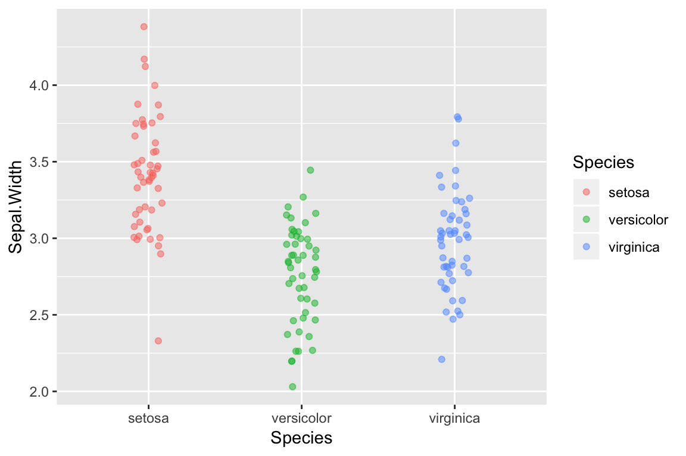
We’ll see other uses of coordinate transformations in later lectures.
5.6 Histograms
Histograms are probably the most common way to depict univariate data. In a histogram rather than showing individual observations, we divide the range of the data into a set of bins, and use vertical bars to depict the number (frequency) of observations that fall into each bin. This gives a good sense of the intervals in which most of the observations are found.
The geom, geom_histogram, takes care of both the geometric representation and the statistical transformations of the data necessary to calculate the counts in each binn.
Here’s the simplest way to use geom_histogram:
ggplot(iris) +
geom_histogram(aes(x = Sepal.Width))
## `stat_bin()` using `bins = 30`. Pick better value with `binwidth`.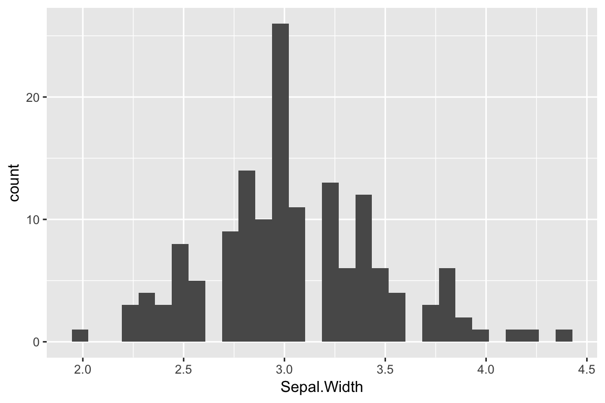
The default number of bins that geom_histogram uses is 30. For modest size data sets this is often too many bins, so it’s worth exploring how the histogram changes with different bin numbers:
ggplot(iris) +
geom_histogram(aes(x = Sepal.Width), bins = 10)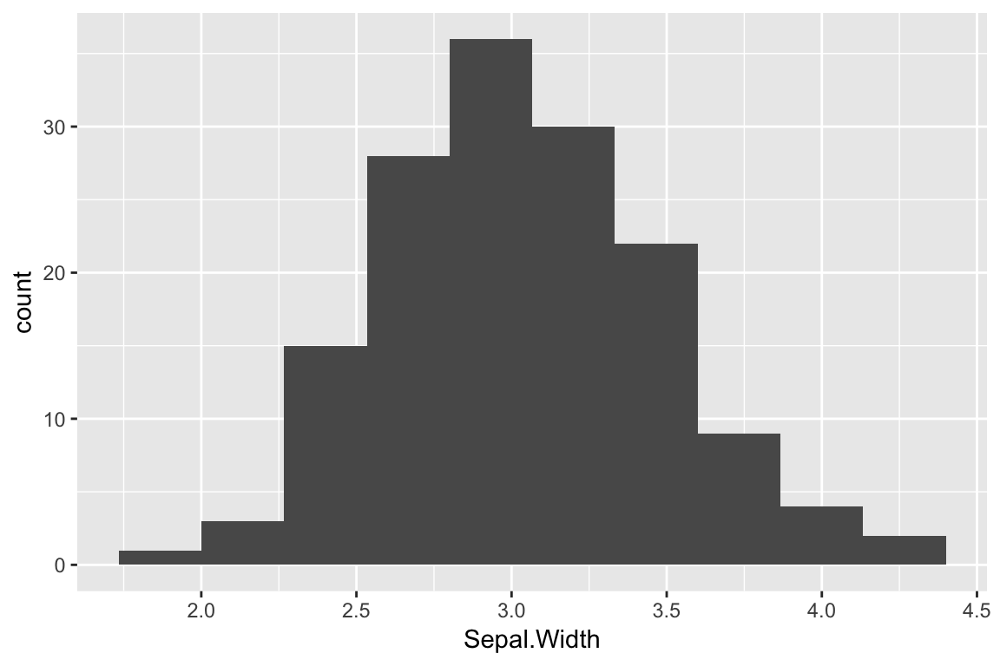
ggplot(iris) +
geom_histogram(aes(x = Sepal.Width), bins = 12)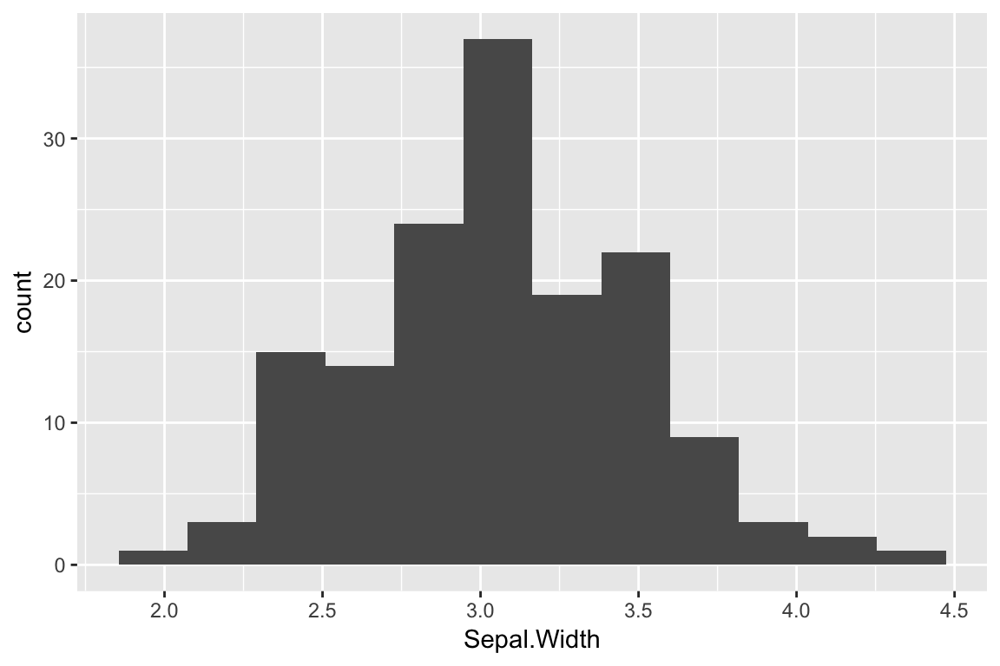
One important thing to note when looking at these histograms with different numbers of bins is that the number of bins used can change your perception of the data. For example, the number of peaks (modes) in the data can be very sensitive to the bin number as can the perception of gaps.
5.6.1 Variations on histograms when considering categorical data
As before, we probably want to break the data down by species. Here we’re faced with some choices about how we depict that data. Do we generate a “stacked histogram” to where the colors indicate the number of observations in each bin that belong to each species? Do we generate side-by-side bars for each species? Or Do we generate separate histograms for each species, and show them overlapping?
Stacked histograms are the default if we associate a categorical variable with the bar fill color:
ggplot(iris) +
geom_histogram(aes(x = Sepal.Width, fill = Species),
bins = 12)To get side-by-side bars, specify “dodge” as the position argument to geom_histogram.
ggplot(iris) +
geom_histogram(aes(x = Sepal.Width, fill = Species),
bins = 12, position = "dodge")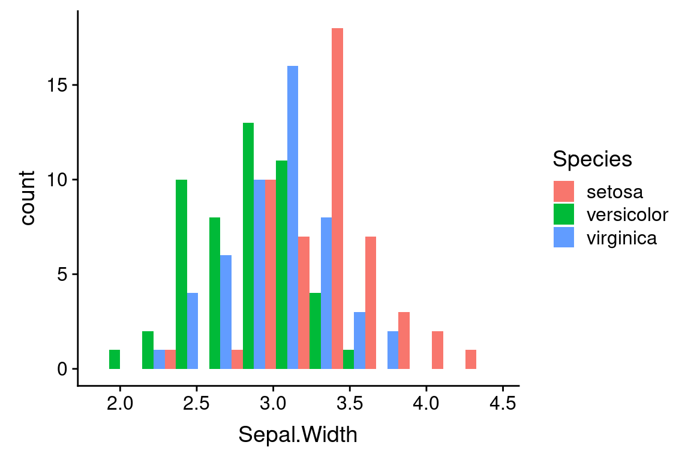
If you want overlapping histograms, use position = "identity" instead. When generating overlapping histograms like this, you probably want to make the bars semi-transparent so you can can distinguish the overlapping data.
ggplot(iris) +
geom_histogram(aes(x = Sepal.Width, fill = Species),
bins = 12, position = "identity", alpha = 0.4)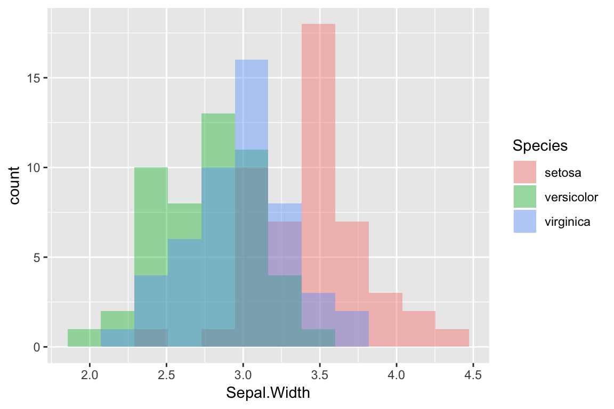
5.7 Faceting to depict categorical information
Yet another way to represent the histograms for the three species is to using faceting, the create subplots for each species. Faceting is the operation of subsetting the data with respect to a discrete or categorical variable of interest, and generating the same plot type for each subset. Here we use the “ncol” argument to the facet_wrap function to specify that the subplots should be drawn in a single vertical column to facilitate comparison of the distributions.
ggplot(iris) +
geom_histogram(aes(x = Sepal.Width, fill = Species), bins = 12) +
facet_wrap(~Species, ncol = 1)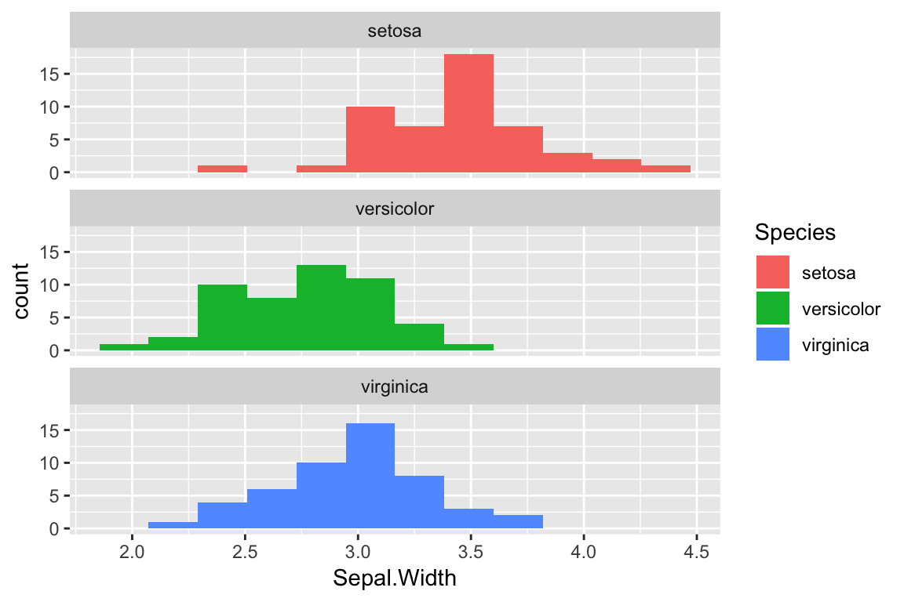
5.8 Density plots
One shortcoming of histograms is that they are sensitive to the choice of bin margins and the number of bins. An alternative is a “density plot”, which you can think of as a smoothed version of a histogram.
ggplot(iris) +
geom_density(aes(x = Sepal.Width, fill = Species), alpha=0.25)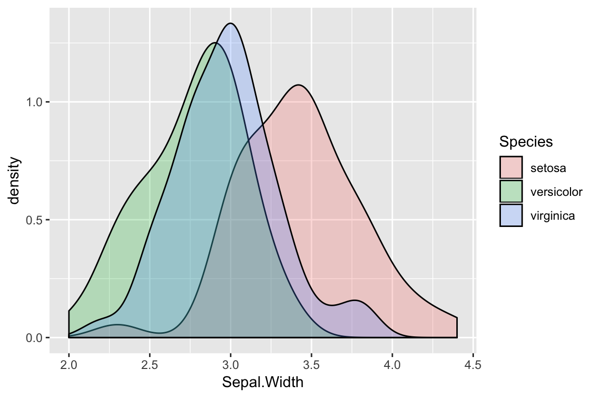
Density plots still make some assumptions that affect the visualization, in particular a “smoothing bandwidth” (specified by the argument bw) which determines how course or granular the density estimation is.
Note that the vertical scale on a density plot is no longer counts (frequency) but probability density. In a density plot, the total area under the plot adds up to one. Intervals in a density plot therefore have a probabilistic intepretation.
5.9 Violin or Beanplot
A violin plot (sometimes called a bean plot) is closely related to a density plot. In fact you can think of a violin plot as a density plot rotated 90 degress and mirrored left/right.
ggplot(iris) +
geom_violin(aes(x = Species, y = Sepal.Width, color = Species, fill=Species),
alpha = 0.25)
5.10 Boxplots
Boxplots are another frequently used univariate visualization. Boxplots provide a compact summary of single variables, and are most often used for comparing distributions between groups.
A standard box plot depicts five useful features of a set of observations: 1) the median (center most line); 2 and 3) the first and third quartiles (top and bottom of the box); 4) the whiskers of a boxplot extend from the first/third quartile to the highest value that is within 1.5 * IQR, where IQR is the inter-quartile range (distance between the first and third quartiles); 5) points outside of the whiskers are usually consider extremal points or outliers. There are many variants on box plots, particularly with respect to the “whiskers”. It’s always a good idea to be explicit about what a box plot you’ve created shows.
ggplot(iris) +
geom_boxplot(aes(x = Species, y = Sepal.Width, color = Species))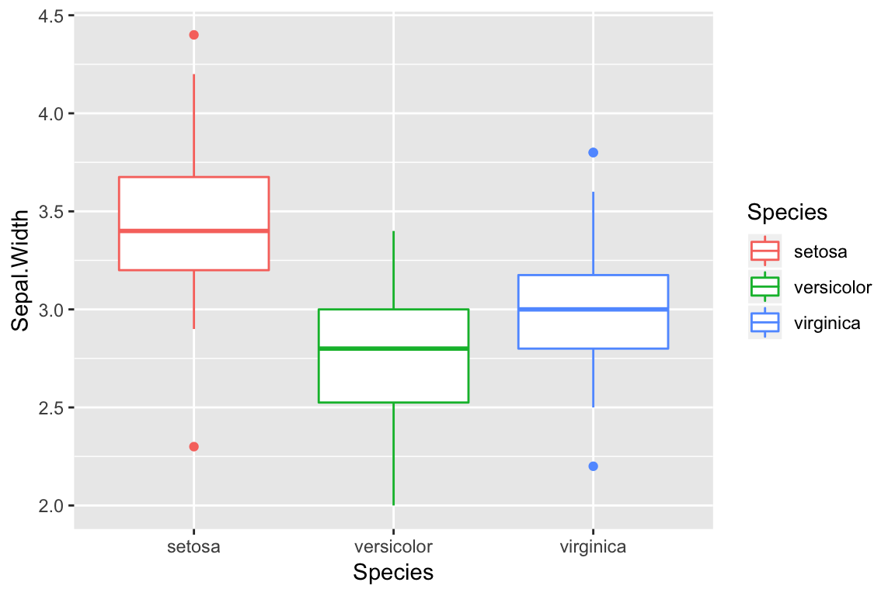
Boxplots are most commonly drawn with the cateogorical variable on the x-axis.
5.11 Building complex visualizations with layers
All of our ggplot2 examples up to now have involved a single geom. We can think of geoms as “layers” of information in a plot. One of the powerful features of plotting useing ggplot2 is that it is trivial to combine layers to make more complex plots.
The template for multi-layered plots is a simple extension of the single layer:
ggplot(data = <DATA>) +
<GEOM_FUNCTION1>(mapping = aes(<MAPPINGS>)) +
<GEOM_FUNCTION2>(mapping = aes(<MAPPINGS>)) 5.12 Useful combination plots
Boxplot or violin plots represent visual summaries/simplifications of the underlying data. This is useful but sometimes key information is lost in the process of summarizing. Combining these plots with a strip plot give you both the “birds eye view” as well as granular information.
5.12.1 Boxplot plus strip plot
Here’s an example of combining box plots and strip plots:
ggplot(iris) +
# outlier.shape = NA suppresses the depiction of outlier points in the boxplot
geom_boxplot(aes(x = Species, y = Sepal.Width), outlier.shape = NA) +
# size sets the point size for the jitter plot
geom_jitter(aes(x = Species, y = Sepal.Width), width=0.2, height=0.05, alpha=0.35, size=0.75)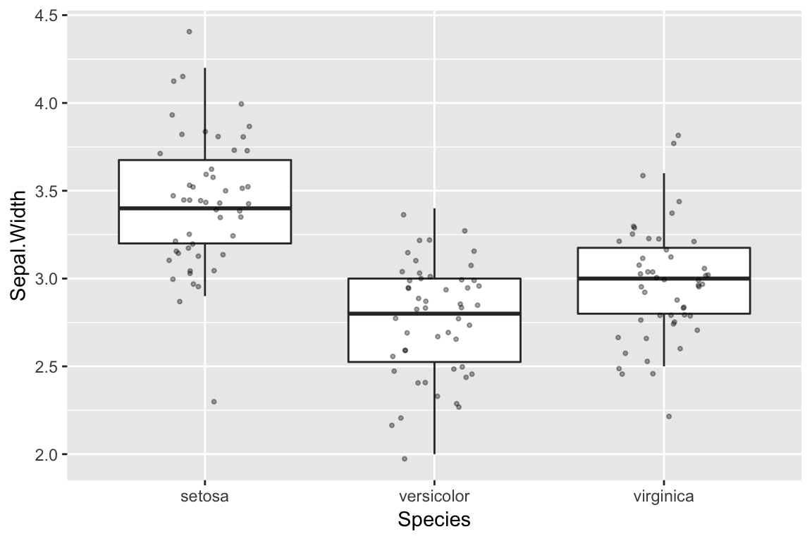
Note that I suppressed the plotting of outliers in geom_boxplot so as not to draw the same points twice (the individual data are drawn by geom_jitter).
5.13 ggplot layers can be assigned to variables
The function ggplot() returns a “plot object” that we can assign to a variable. The following example illustrates this:
# create base plot object and assign to variable p
# this does NOT draw the plot
p <- ggplot(iris, mapping = aes(x = Species, y = Sepal.Width)) In the code above we created a plot object and assigned it to the variable p. However, the plot wasn’t drawn. To draw the plot object we evaluate it as so:
p # try to draw the plot object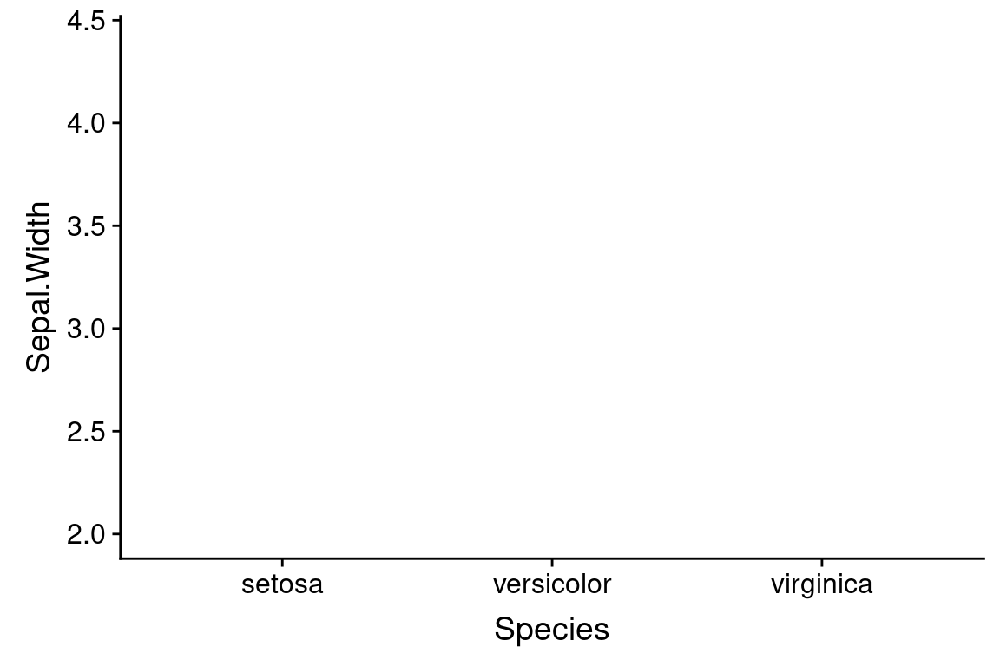
The code block above didn’t generate an image, because we haven’t added a geom to the plot to determine how our data should be drawn. We can add a geom to our pre-created plot object as so:
# add a point geom to our base layer and draw the plot
p + geom_boxplot()
If we wanted to we could have assigned the geom to a variable as well:
box.layer <- geom_boxplot()
p + box.layer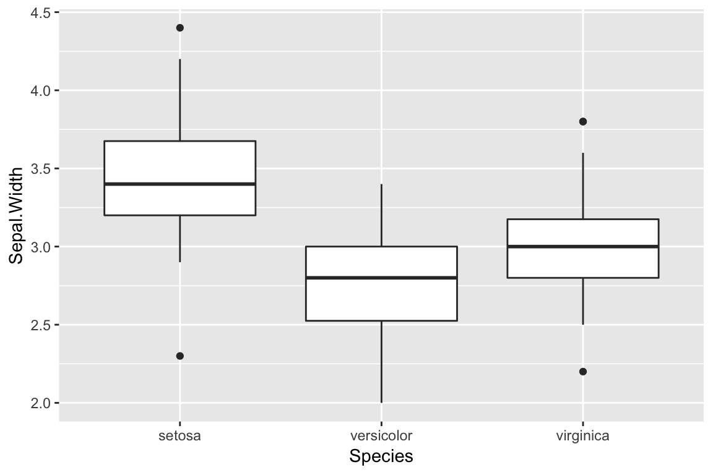
In this case we don’t really gain anything by creating an intermediate variable, but for more complex plots or when considering different versions of a plot this can be very useful.
5.13.1 Violin plot plus strip plot
Here is the principle of combining layers, applied to a combined violin plot + strip plot. Again, we set shared aesthetic mappings in ggplot function call and this time we assign individual layers of the plot to variables.
p <- ggplot(iris, mapping = aes(x = Species, y = Sepal.Width, color = Species))
violin.layer <- geom_violin()
jitter.layer <- geom_jitter(width=0.15, height=0.05, alpha=0.5, size=0.75)
p + violin.layer + jitter.layer # combined layers of plot and draw5.14 Adding titles and tweaking axis labels
ggplot2 automatically adds axis labels based on the variable names in the data frame passed to ggplot. Sometimes these are appropriate, but more presentable figures you’ll usually want to tweak the axis labs (e.g. adding units). The labs (short for labels) function allows you to do so, and also let’s you set a title for your plot. We’ll illustrate this by modifying our previous figure. Note that we save considerable amounts of re-typing since we had already assigned three of the plot layers to variables in the previous code block:
p + violin.layer + jitter.layer +
labs(x = "Species", y = "Sepal Width (cm)",
title = "Sepal Width Distributions for Three Iris Species")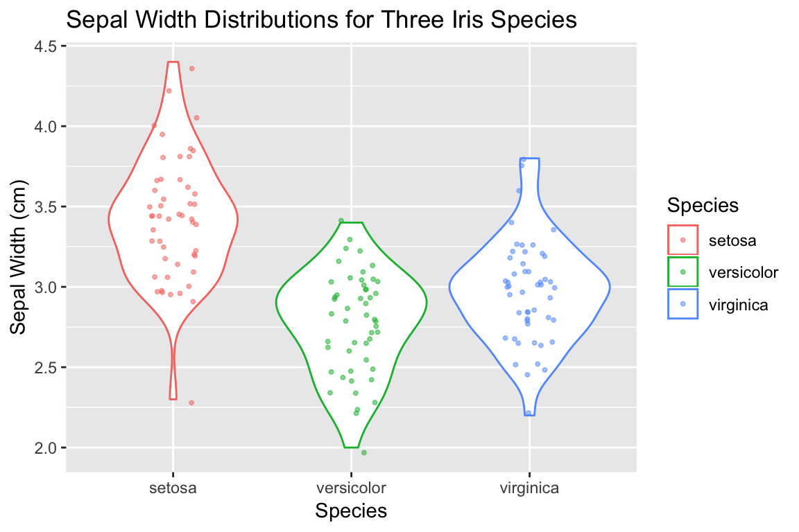
5.15 ggplot2 themes
By now you’re probably familiar with the default “look” of plots generated by ggplot2, in particular the ubiquitous gray background with a white grid. This default works fairly well in the context of RStudio notebooks and HTML output, but might not work as well for a published figure or a slide presentation. Almost every individual aspect of a plot can be tweaked, but ggplot2 provides an easier way to make consistent changes to a plot using “themes”. You can think of a theme as adding another layer to your plot. Themes should generally be applied after all the other graphical layers are created (geoms, facets, labels) so the changes they create affect all the prior layers.
There are eight default themes included with ggplot2, which can be invoked by calling the corresponding theme functions: theme_gray, theme_bw, theme_linedraw, theme_light, theme_dark, theme_minimal, theme_classic, and theme_void (See http://ggplot2.tidyverse.org/reference/ggtheme.html for a visual tour of all the default themes)
For example, let’s generate a boxplot using theme_bw which get’s rid of the gray background:
# create another variable to hold combination of three previous
# ggplot layers. I'm doing this because I'm going to keep re-using
# the same plot in the following code blocks
violin.plus.jitter <- p + violin.layer + jitter.layer
violin.plus.jitter + theme_bw()
Another theme, theme_classic, remove the grid lines completely, and also gets rid of the top-most and right-most axis lines.
violin.plus.jitter + theme_classic()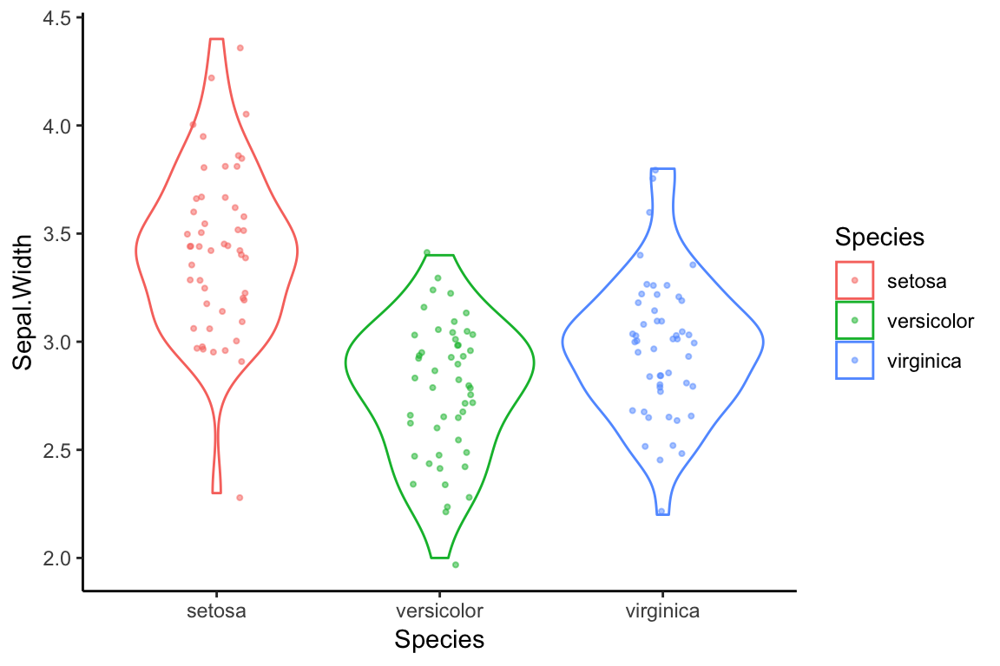
5.15.1 Further customization with ggplot2::theme
In addition to the eight complete themes, there is a theme function in ggplot2 that allows you to tweak particular elements of a theme (see ?theme for all the possible options). For example, to tweak just the aspect ratio of a plot (the ratio of width to height), you can set the aspect.ratio argument in theme:
violin.plus.jitter + theme_classic() + theme(aspect.ratio = 1)Theme related function calls can be combined to generate new themes. For example, let’s create a theme called my.theme by combining theme_classic with a call to theme:
my.theme <- theme_classic() + theme(aspect.ratio = 1)We can then apply this theme as so:
violin.plus.jitter + my.theme
5.16 Other aspects of ggplots can be assigned to variables
Plot objects, geoms and themes are not the only aspects of a figure that can be assigned to variables for later use. For example, we can create a label object:
my.labels <- labs(x = "Species", y = "Sepal Width (cm)",
title = "Sepal Width Distributions for Three Iris Species")Combining all of our variables as so, we generate our new plot:
violin.plus.jitter + my.labels + my.theme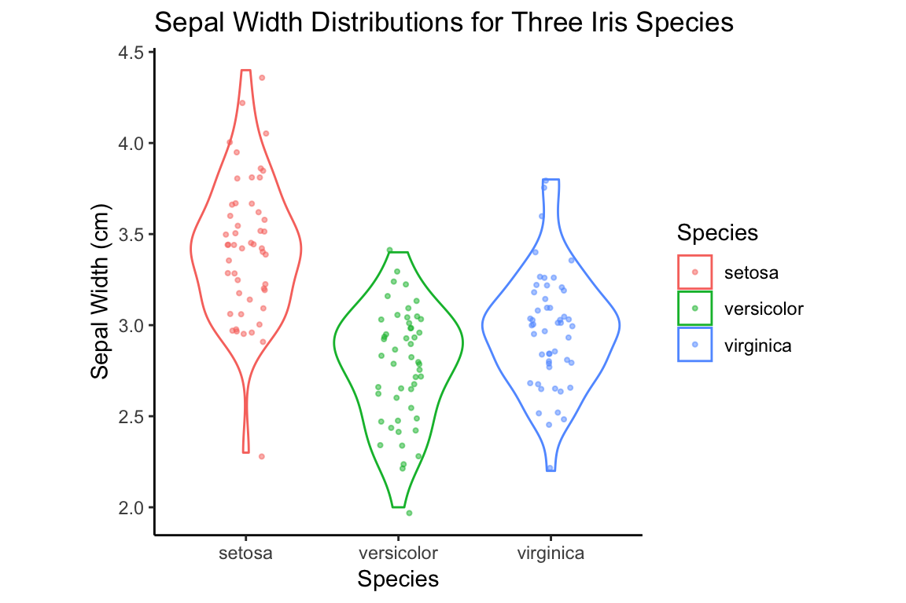
5.17 Bivariate plots
Now we turn our attention to some useful representations of bivariate distributions.
For the purposes of these illustrations I’m initially going to restrict my attention to just one of the three species represented in the iris data set – the I. setosa specimens. This allows us to introduce a vary useful base function called subset(). subset() will return subsets of a vector or data frames that meets the specified conditions. This can also be accomplished with conditional indexing but subset() is usually less verbose.
# create a new data frame composed only of the I. setosa samples
setosa.only <- subset(iris, Species == "setosa")In the examples that follow, I’m going to illustrate different ways of representing the same bivariate distribution – the joint distribution of Sepal Length and Sepal Width – over and over again. To avoid repitition, let’s assign the base ggplot layer to a variable as we did in our previous examples. We’ll also pre-create a label layer.
setosa.sepals <- ggplot(setosa.only,
mapping = aes(x = Sepal.Length, y = Sepal.Width))
sepal.labels <- labs(x = "Sepal Length (cm)", y = "Sepal Width (cm)",
title = "Relationship between Sepal Length and Width",
caption = "data from Anderson (1935)")5.17.1 Scatter plots
A scatter plot is one of the simplest representations of a bivariate distribution. Scatter plots are simple to create in ggplot2 by specifying the appropriate X and Y variables in the aesthetic mapping and using geom_point for the geometric mapping.
setosa.sepals + geom_point() + sepal.labels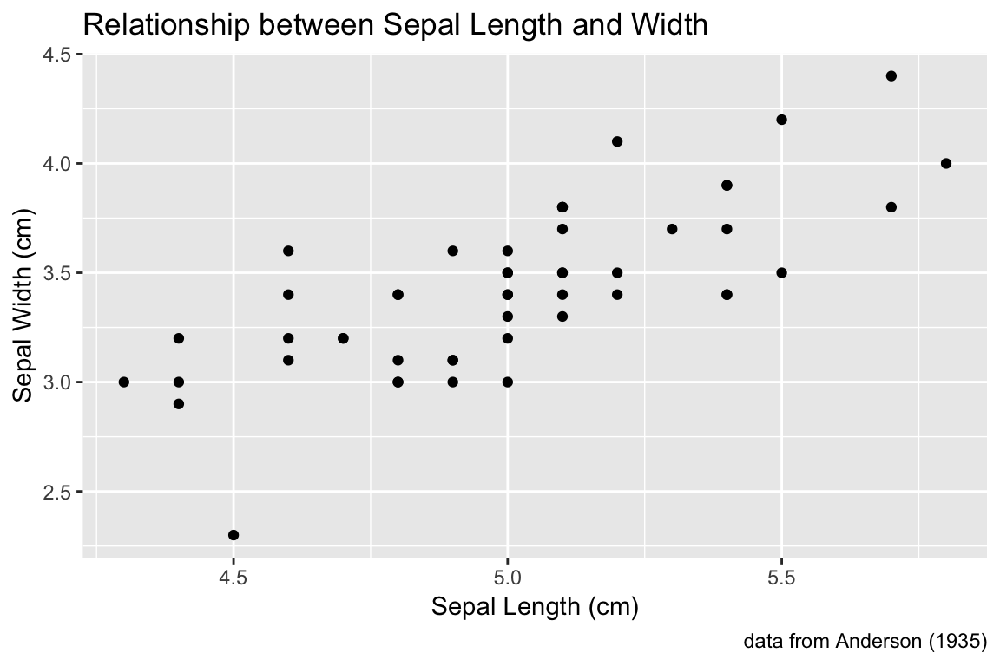
5.17.2 Adding a trend line to a scatter plot
ggplot2 makes it easy to add trend lines to plots. I use “trend lines” here to refer to representations like regression lines, smoothing splines, or other representations mean to help visualize the relationship between pairs of variables. We’ll spend a fair amount of time exploring the mathematics and interpetation of regression lines and related techniques in later lectures, but for now just think about trends lines as summary representations for bivariate relationships.
Trend lines can be created using geom_smooth. Let’s add a default trend line to our I. setosa scatter plot of the Sepal Width vs Sepal Length:
setosa.sepals +
geom_jitter() + # using geom_jitter to avoid overplotting of points
geom_smooth() +
sepal.labels + labs(subtitle = "I. setosa data only") +
my.theme
## `geom_smooth()` using method = 'loess' and formula 'y ~ x'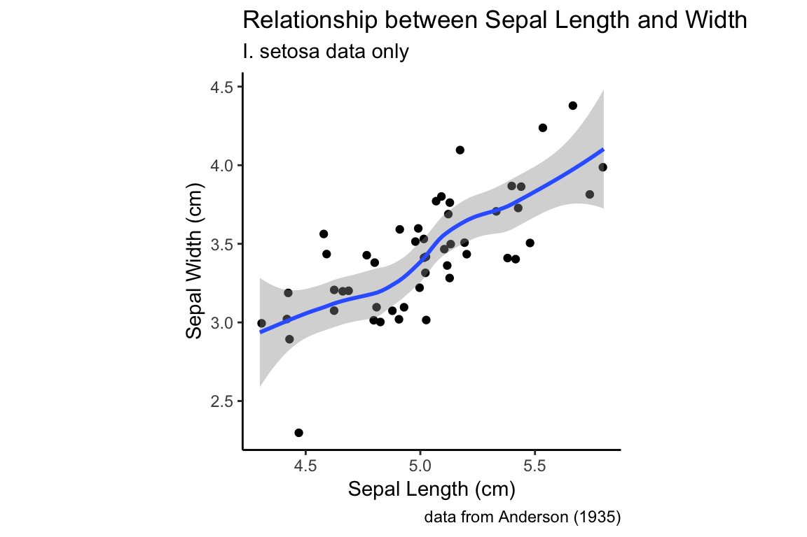
The defaul trend line that geom_smooth fits is generated by a technique called “LOESS regression”. LOESS regression is a non-linear curve fitting method, hence the squiggly trend line we see above. The smoothness of the LOESS regression is controlled by a parameter called span which is related to the proportion of points used. We’ll discuss LOESS in detail in a later lecture, but here’s an illustration how changing the span affects the smoothness of the fit curve:
setosa.sepals +
geom_jitter() + # using geom_jitter to avoid overplotting of points
geom_smooth(span = 0.95) +
sepal.labels + labs(subtitle = "I. setosa data only") +
my.theme
## `geom_smooth()` using method = 'loess' and formula 'y ~ x'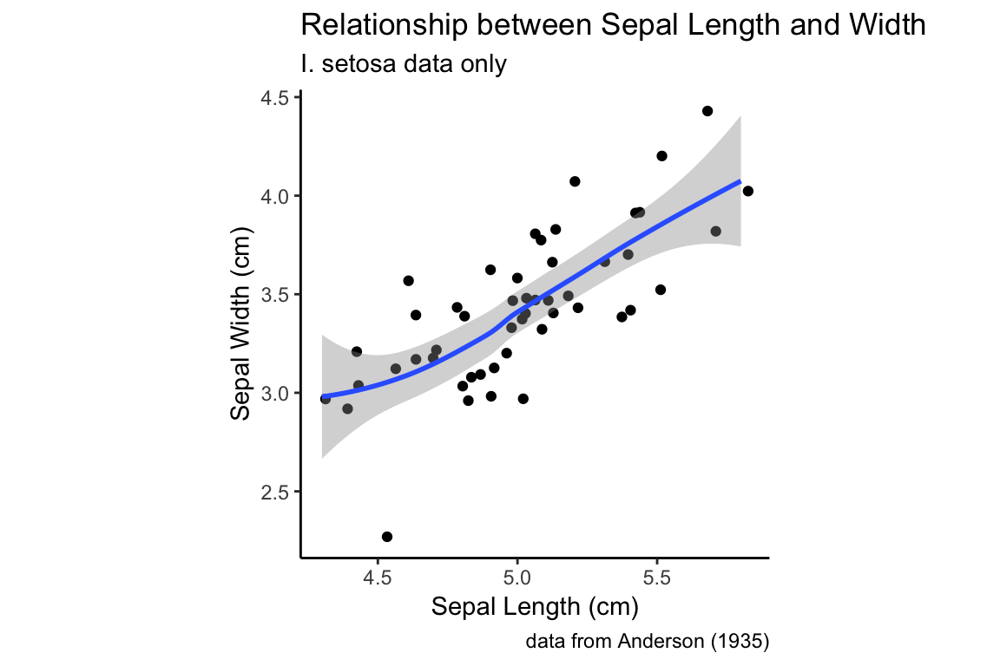
5.17.2.1 Linear trend lines
If instead we want a straight trend line, as would typically be depicted for a linear regression model we can specify a different statistical method:
setosa.sepals +
geom_jitter() + # using geom_jitter to avoid overplotting of points
geom_smooth(method = "lm", color = "red") + # using linear model ("lm")
sepal.labels + labs(subtitle = "I. setosa data only") +
my.theme
5.18 Bivariate density plots
The density plot, which we introduced as a visualization for univariate data, can be extended to two-dimensional data. In a one dimensional density plot, the height of the curve was related to the relatively density of points in the surrounding region. In a 2D density plot, nested contours (or contours plus colors) indicate regions of higher local density. Let’s illustrate this with an example:
setosa.sepals +
geom_density2d() +
sepal.labels + labs(subtitle = "I. setosa data only") +
my.theme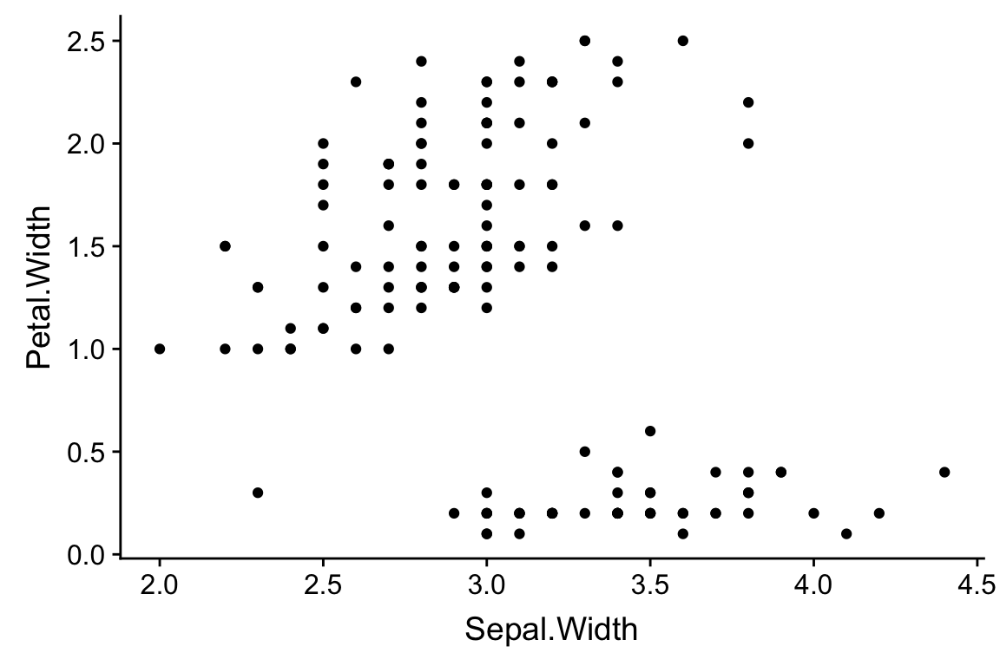
The relationship between the 2D density plot and a scatter plot can be made clearer if we combine the two:
setosa.sepals +
geom_density_2d() +
geom_jitter(alpha=0.35) +
sepal.labels + labs(subtitle = "I. setosa data only") +
my.theme5.19 Combining Scatter Plots and Density Plots with Categorical Information
As with many of the univariate visualizations we explored, it is often useful to depict bivariate relationships as we change a categorical variable. To illustrate this, we’ll go back to using the full iris data set.
all.sepals <- ggplot(iris, aes(x = Sepal.Length, y = Sepal.Width))
all.sepals +
geom_point(aes(color = Species, shape = Species), size = 2, alpha = 0.6) +
sepal.labels + labs(subtitle = "All species") +
my.theme
Notice how in our aesthetic mapping we specified that both color and shape should be used to represent the species categories.
The same thing can be accomplished with a 2D density plot.
all.sepals +
geom_density_2d(aes(color = Species)) +
sepal.labels + labs(subtitle = "All species") +
my.themeAs you can see, in the density plots above, when you have multiple categorical variables and there is significant overlap in the range of each sub-distribution, figures can become quite busy. As we’ve seen previously, faceting (conditioning) can be a good way to deal with this. Below a combination of scatter plots and 2D density plots, combined with faceting on the species variable.
all.sepals +
geom_density_2d(aes(color = Species), alpha = 0.5) +
geom_point(aes(color = Species), alpha=0.5, size=1) +
facet_wrap(~ Species) +
sepal.labels + labs(subtitle = "All species") +
theme_bw() +
theme(aspect.ratio = 1, legend.position = "none") # get rid of legend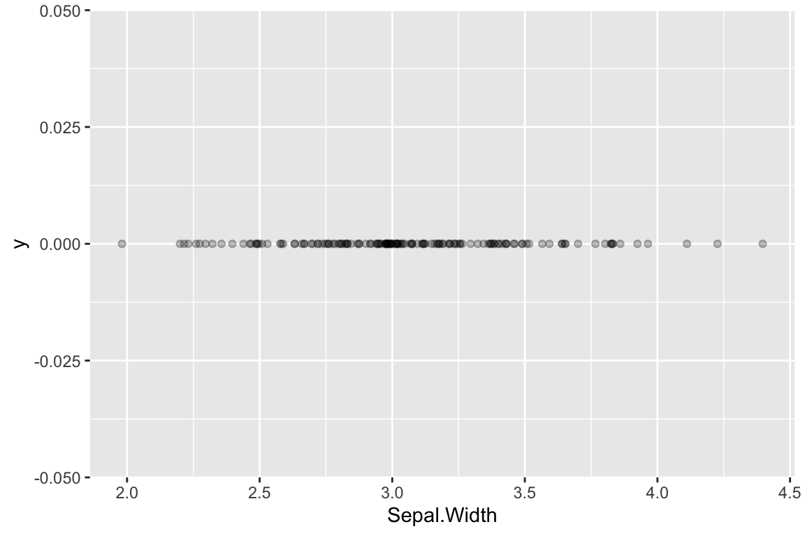
In this example I went back to using a theme that includes grid lines to facilitate more accurate comparisons of the distributions across the facets. I also got rid of the legend, because the information there was redundant.
5.20 Density plots with fill
Let’s revisit our earlier single species 2D density plot. Instead of simply drawing contour lines, let’s use color information to help guide the eye to areas of higher density. To draw filled contours, we use a sister function to geom_density_2d called stat_density_2d:
setosa.sepals +
stat_density_2d(aes(fill = ..level..), geom = "polygon") +
sepal.labels + labs(subtitle = "I. setosa data only") +
my.themeUsing the default color scale, areas of low density are drawn in dark blue, whereas areas of high density are drawn in light blue. I personally find this dark -to-light color scale non-intuitive for density data, and would prefer that darker regions indicate area of higher density. If we want to change the color scale, we can use the a scale function (in this case scale_fill_continuous) to set the color values used for the low and high values (this function we’ll interpolate the intervening values for us).
NOTE: when specifying color names, R accepts standard HTML color names (see the Wikipedia page on web colors for a list). We’ll also see other ways to set color values in a later class session.
setosa.sepals +
stat_density_2d(aes(fill = ..level..), geom = "polygon") +
# lavenderblush is the HTML standard name for a light purplish-pink color
scale_fill_continuous(low="lavenderblush", high="red") +
sepal.labels + labs(subtitle = "I. setosa data only") +
my.theme
The two contour plots we generated looked a little funny because the contours are cutoff due to the contour regions being outside the limits of the plot. To fix this, we can change the plot limits using the lims function as shown in the following code block. We’ll also add the scatter (jittered) to the emphasize the relationship between the levels, and we’ll change the title for the color legend on the right by specifying a text label associated with the fill arguments in the labs function.
setosa.sepals +
stat_density_2d(aes(fill = ..level..), geom = "polygon") +
scale_fill_continuous(low="lavenderblush", high="red") +
geom_jitter(alpha=0.5, size = 1.1) +
# customize labels, including legend label for fill
labs(x = "Sepal Length(cm)", y = "Sepal Width (cm)",
title = "Relationship between sepal length and width",
subtitle = "I. setosa specimens only",
fill = "Density") +
# Set plot limits
lims(x = c(4,6), y = c(2.5, 4.5)) +
my.theme 5.21 2D bin and hex plots
Two dimensional bin and hex plots are alterative ways to represent the joint density of points in the Cartesian plane. Here are examples of to generate these plot types. Compare them to our previous examples.
A 2D bin plot can be tought of as a 2D histogram:
setosa.sepals +
geom_bin2d(binwidth = 0.2) +
scale_fill_continuous(low="lavenderblush", high="red") +
sepal.labels + labs(subtitle = "I. setosa data only") +
my.theme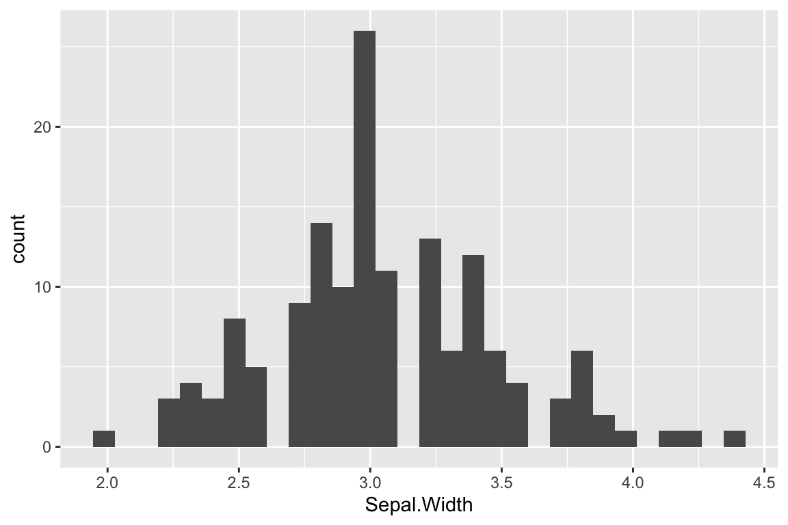
A hex plot is similar to a 2D bin plot but uses hexagonal regions instead of squares. Hexagonal bins are useful because they can somtimes avoid visual artefacts sometimes apparent with square bins:
setosa.sepals +
geom_hex(binwidth = 0.2) +
scale_fill_continuous(low="lavenderblush", high="red") +
sepal.labels + labs(subtitle = "I. setosa data only") +
my.theme
5.22 The cowplot package
A common task when preparing visualizations for scientific presentations and manuscripts is combining different plots as subfigures of a larger figure. To accomplish this we’ll use a package called cowplot that compliments the power of ggplot2. Install cowplot either via the command line or the R Studio GUI (see Section 2.8).
library(cowplot) # assumes package has been installedcowplot allows us to create individual plots using ggplot, and then arrange them in a grid-like fashion with labels for each plot of interest, as you would typically see in publications. The core function of cowplot is plot_grid(), which allows the user to layout the sub-plots in an organized fashion and add labels as necesary.
To illustrate plot_grid() let’s create three different representations of the distribution of sepal width in the irisu data set, and combine them into a single figure:
p <- ggplot(iris,
mapping = aes(x = Species, y = Sepal.Width, color = Species))
# for the histogram we're going to override the mapping because
# geom_histogram only takes an x argument
plot.1 <- p +
geom_histogram(bins=12,
mapping = aes(x = Sepal.Width), inherit.aes = FALSE)
plot.2 <- p + geom_boxplot()
plot.3 <- p + geom_violin()
plot_grid(plot.1, plot.2, plot.3)If instead, we wanted to layout the plots in a single row we could change the call to plot_grid as so:
plot_grid(plot.1, plot.2, plot.3,
nrow = 1, labels = c("A", "B", "C"))
Notice we also added labels to our sub-plots.